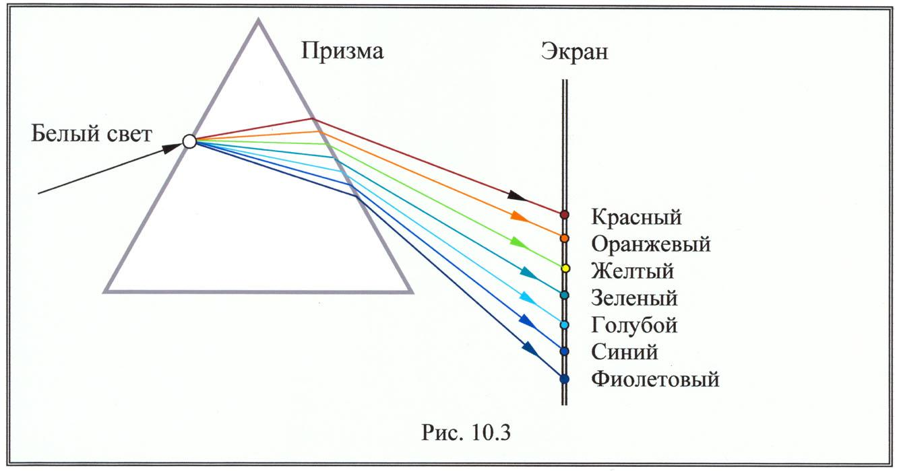

Решите следующие задачи, чтобы закрепить свои знания о дисперсии света.
Белый свет падает на стеклянную призму. Красный свет испытывает угол отклонения 30°, а фиолетовый – 32°. Определите угловую дисперсию призмы.
Показатель преломления стекла для красного света равен 1.51, а для фиолетового – 1.53. Угол преломления призмы равен 5°. Определите угловую дисперсию призмы.
При прохождении белого света через стеклянную призму, фиолетовый свет отклоняется сильнее, чем красный. Объясните это явление.
Угол призмы равен 10°. Показатель преломления для красного света 1.5, а для фиолетового 1.52. Найдите разность углов отклонения красного и фиолетового света.
Объясните, почему при прохождении белого света через призму наблюдается радужная полоса.
Какое из явлений иллюстрирует рисунок: интерференцию, дифракцию или дисперсию?
Дисперсия света приводит к появлению радуги. Объясните, почему радугу можно наблюдать после дождя.
Угловая дисперсия призмы равна 3°. Если угол призмы равен 6°, определите разность показателей преломления для крайних лучей спектра.
На призму с углом 4° падает белый свет. Определите угловое расстояние между красным (n = 1.50) и фиолетовым (n = 1.52) лучами после прохождения через призму.
Что произойдет с радужной полосой при прохождении белого света через призму, если призму поместить в воду? Укажите, как изменится угловое расстояние между красным и фиолетовым лучами.